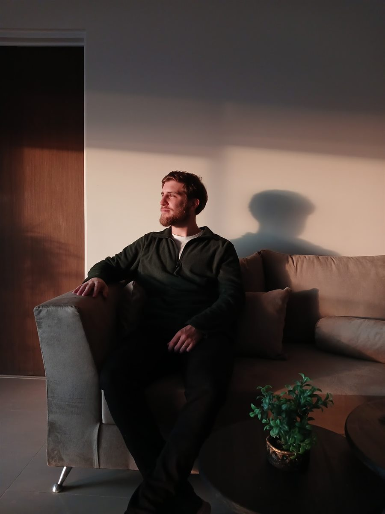

Presencial
En Banfield
French 218, Banfield, zona sur del Gran Buenos Aires.
Psicología integrativa · Jóvenes y adultos
Espacio de terapia presencial en Banfield (GBA Sur) o virtual, desde donde estés.
Los botones de contacto se activan cuando arrancamos con la versión oficial.

Enfoque
El trabajo combina tres miradas para adaptarse a cada persona y a lo que trae a la consulta.
Trabaja sobre pensamientos, emociones y conductas del día a día.
Busca comprender de dónde vienen los patrones que se repiten.
Pone en el centro la experiencia propia, los valores y el sentido.
Modalidad
Presencial
French 218, Banfield, zona sur del Gran Buenos Aires.
Virtual
Sesiones virtuales, sin necesidad de trasladarte.
Cómo empezar
Un mensaje corto contando qué estás buscando alcanza.
Acordamos día, hora y si la sesión es presencial o virtual.
En Banfield o virtual, de lunes a viernes.
Horarios y contacto
| Lunes a viernes | 8:00 a 19:00 |
|---|---|
| Sábado y domingo | Cerrado |
Jóvenes y adultos · Presencial en Banfield o virtual.
Los botones de contacto se activan cuando arrancamos con la versión oficial.